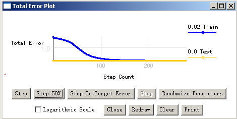

|
实验七 神经网络实验群 神经网络实验 一、实验目的： 理解反向传播网络的结构和原理，掌握反向传播算法对神经元的训练过程，了 解反向传播公式。通过构建BP网络实例，熟悉前馈网络的原理及结构。 二、实验原理: 反向传播(BP)算法是一种计算单个权值变化引起网络性能变化值的较为简单的 方法。BP算法过程从输出节点开始，反向地向第一隐含层(即最接近输入层的隐 含层)传播由总误差引起的权值修正。BP网络不仅含有输入节点和输出节点，而 且含有一层或多层隐(层)节点。输入信号先向前传递到隐节点，经过作用后，再 把隐节点的输出信息传递到输出节点，最后给出输出结果。 三、实验条件： 神经网络可视化实验环境.下图是该环境运行中的典型界面.

四、实验内容： 1 通过BP网络各项参数的不同设置，观察BP算法的学习效果。 2 观察比较BP网络 拓朴结构及其它各项参数变化对于训练结果的影响。 3 观察并分析不同训练数据对相同拓朴结构的BP网络建模的影响. 4 用MLP模拟一个典型的非线性问题. 五、实验步骤： 验证性实验: 1、进入实验环境；2、选择相关的实验模块；3、设置相应地实验参数（如设 置初始权值为随机值）； 4、选择实验运行方式；5、观测运行过程；6、修 改相应地参数重复第1~5步直到满意为止。 设计型实验： 1、进入实验环境；2、进入创建新模型工作窗；3、创建网络拓朴结构； 4、设置相应的网络参数；5、输入相应的训练数据集；6、设置实验环境参数； 7、选择相应的运行方式；8、观察实验过程；9、修改相关参数并重复1~8步 直至满意为止。 六、实验结论：包括做实验的目的、方法、过程等，具体要写成实验报告,如下图所示（见下页). 1 BP网络的基本结构及BP算法的训练过程。 2 试述阈值函数和权值变化对BP网络推理结果的影响。 3、 训练数据集变化对网络训练结果的影响。 附：神经网络实验报告表:
|
|||||||||||||||||||||||||||||||||||||||||
| [导航栏特性在此站点中不可用] | |||||||||||||||||||||||||||||||||||||||||